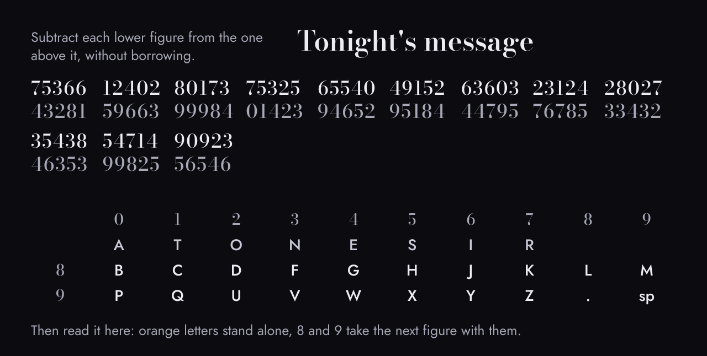
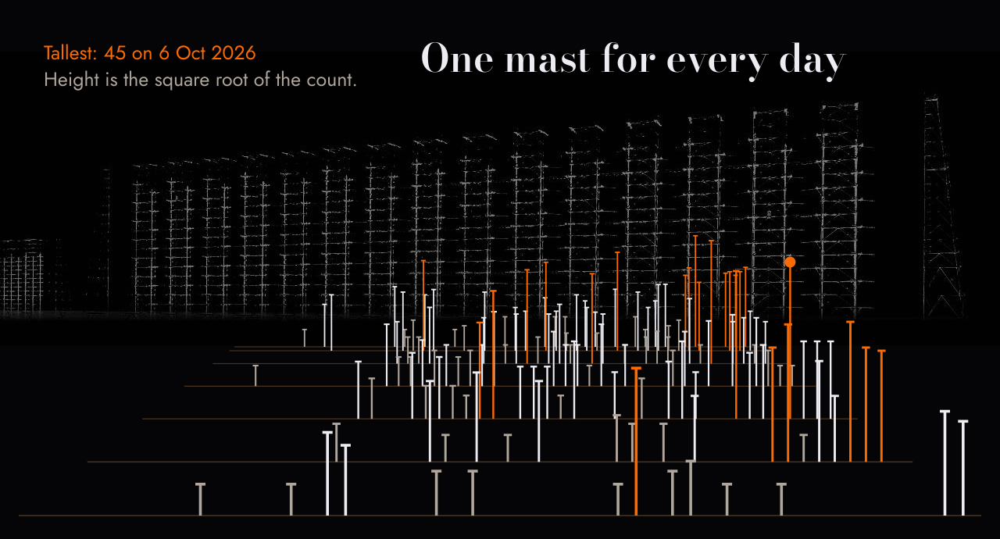
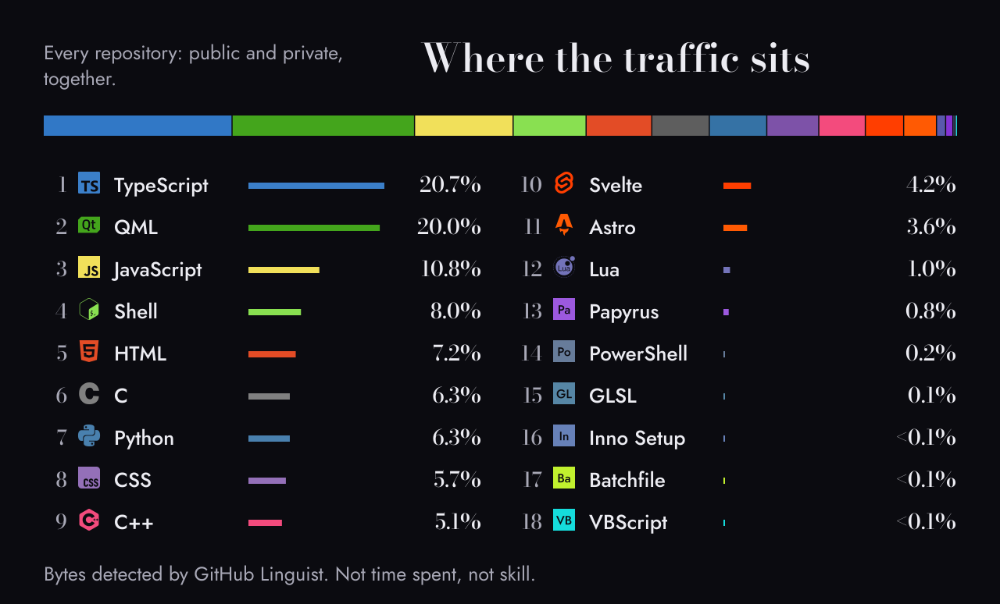
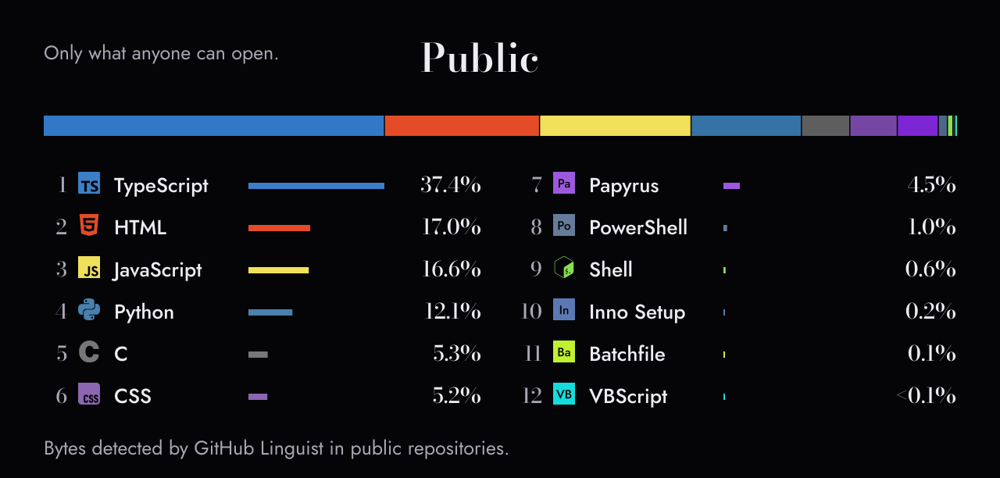
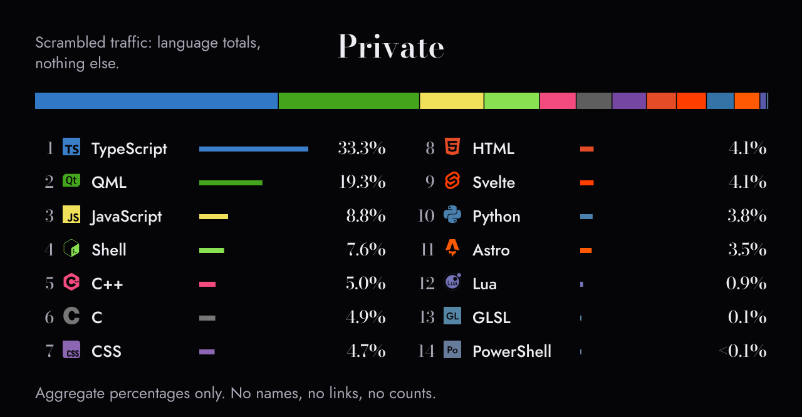
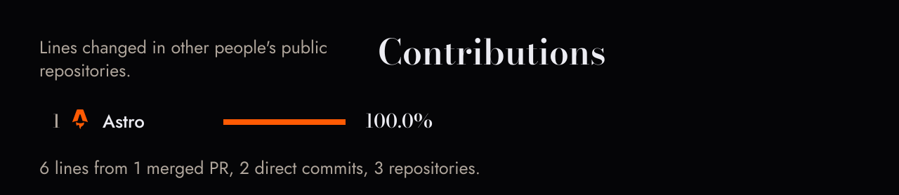
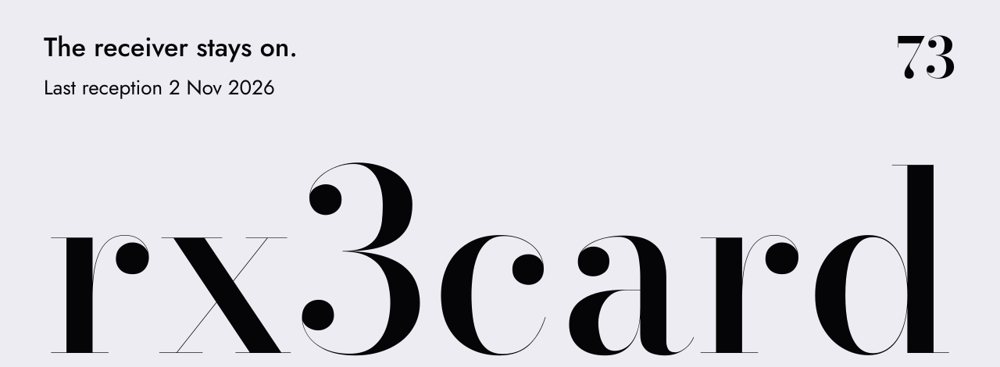

rx3card preview


Tonight's message · it can be read by hand



Public · HTML leads, 12 in all

Private · TypeScript leads, 14 in all

Contributions · Astro


Dish: Gar Lunney, 1960, public domain. Duga array: Ingmar Runge, CC BY 3.0, recoloured. Type: Bodoni Moda and Jost, SIL OFL. Sources · How the figures are made
Local preview, rendered from GitHub's own Markdown API. Nothing pending: every picture here is final. Generated images in ASSETS_TO_GENERATE.md are optional.